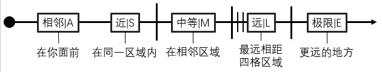
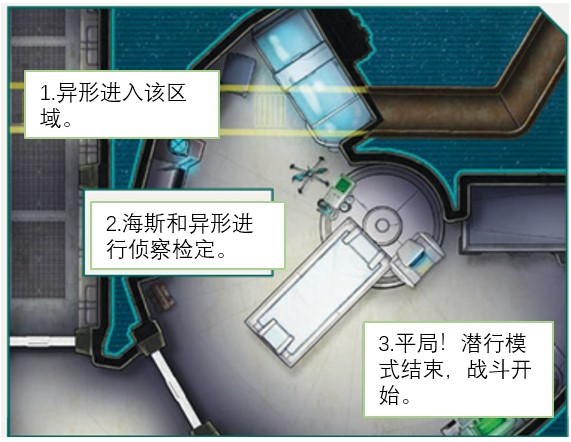

4 潜行&战斗
战或逃？现在这是大问题，不是吗？
你可能觉得躲在舒适的角色卡背后无比强大，但你的角色可是在外面冒险——而他们可是凡人。还记得第2章我们告诉你不要搞死你的角色吗？把这当作第二次警告。
通常，逃跑并留待以后再战是更明智的选择——前提是你够快，能甩开那些紧追不舍的东西。很多时候，最好的办法是融入阴影，静悄悄地藏起来。在松开脉冲步枪保险之前，总是先问自己——值得吗？
有时候你没有选择。你以为紧跟在你身后的那个外星生物，其实早就潜伏在那个你以为安全的黑暗角落里。
仅仅与外星怪物面对面都可能让你的脑子变成一团浆糊。你可能只有一瞬间的时间，下一刻它就可能把你肢解、砸碎你的头颅。
而危险不仅仅来自外星生物。
边境上的人类同样讨厌。有时候，有人会直接把枪顶到你脸上。在走投无路时，你最好战斗。当有人或某种东西向你袭来时，你必须能够保护自己。
方法如下。
空间&时间
地图
《异形》角色扮演游戏中的潜行场景或战斗通常使用星舰、殖民地或其他任何你们的角色碰巧正在战斗挣命的地方的地图来进行。
在《希望的最后一天入门套装》和电影式冒险比如《狂喜协议》中有冒险地点的大尺寸全彩地图，但是没有细节的地图也没问题，甚至GM快速手绘的草图也可以用于更多的即兴玩法。
Token&微缩模型：在潜行或战斗中，若想在地图上追踪角色的移动轨迹，你可以使用官方发布的《异形》RPG系列产品中的纸板token、包含在异形RPG微缩模型套装中的微缩模型、虚拟桌面上的数字token，或是任何适合你自己桌子的替代品。
区域
地图被划分为区域（zone）。一个区域通常是一个房间、一条走廊或者一片地面。区域的大小各不相同——从几步之遥到大约25米不等。在狭小环境中，区域通常比开阔地形要小。在官方冒险中，区域的边界会在地点地图上标出。
拥挤的/开放的：一个区域可以是拥挤的，意味着区域内有物品可以躲藏或作为掩体或护至身前，也可以是开放的，意味着该区域没有这样的物品。开放区域通常是走廊和爬行空间，但也可以是空房间或其他开放空间。如果冒险文本没有说明某个区域是开放还是拥挤，GM会做出判断。

边界：两个相邻区域之间的边界可能是开放的或闭合的（通过墙或气闸）。闭合的边界可能有门或气闸，按照地图指示，允许在这样的两个区域之间移动。走廊和爬行空间被门或地图上的线分成数个区域。
视线：除了躲起来或处于全身掩体中的角色，在相同区域中的每个人都有看见彼此的视野。这不适用于狭窄的爬行空间，比如通风井——在那里，其他角色会阻挡视线（甚至是友方）。开放区域的边界不会阻挡视线。闭合的边界通常会阻挡视线，即使有门或气闸——除非你主动站在门廊并朝里看。
射程
战斗单位之间的距离被分为5格射程类别，见上方图片。
测量时间
在异形宇宙中，时间很重要。无论你是在外星世界一边被异形围猎一边等待救援，还是老妈正在倒数你们飞船的毁灭，你都需要追踪时间。
游戏中通常使用的时间单位有3种，取决于当时的情况。见下表。一轮、节和班的准确时间可以根据情况改变。
潜行模式
在《异形》角色扮演游戏中，大量的恐怖发生在敌人现身和子弹纷飞之前。冒险的关键部分是探索未知地点，而敌人潜伏在黑暗中。在游戏中，我们称其为潜行模式。潜行模式的时间单位是节，每节大约5-10分钟长。
PC的移动
潜行模式中的移动是缓慢小心的。在1节时间中，你的角色可以移动到地图上的相邻区域（假设边界是开放的或有打开的门或气闸），扫描敌人，并从GM那里得到该区域的详细描述。如果你们有一个团队，你们可以单独或集体移动。PC的行动顺序是自由选择的。
探索1格区域：如果你想要更仔细地检查区域中的东西，比如搜索房间或访问数据终端，你可能需要在同一区域待几节（或者甚至整班），如果冒险文本或GM这样要求。
NPC的移动
在潜行模式中，NPC的移动由GM在每节PC移动完成后秘密处理。人类NPC遵守和PC相同的移动规则，但是异形每有1点速度（第208页），每节可以移动1格区域。NPC的移动顺序由GM选择。
主动&被动：冒险文本可以告诉GM，敌人是主动的还是被动的。主动的敌人会在地图上移动，跟踪你或尝试远离你。被动敌人不知道你的存在，并通常是静止不动的，直到他们发现你或被你惊动。敌人可以从被动变为主动，反之亦然，由冒险或GM确定。
隐藏地图：为了管理NPC的移动，我们建议GM准备一张地图的副本，藏在GM屏幕上、其他人视线外。在这张地图上，GM可以放置代表NPC的token，不让PC看见。官方冒险中有所需的GM地图。如果GM没有屏幕，也可以在至上追踪隐藏NPC的移动。
爬行空间
通风井和其他爬行空间是异形冒险和在潜行模式下进行独特挑战的常见场景。爬行空间可以沿着房间和走廊的一侧延伸，在它们上方或下方（在这种情况下，官方冒险地图上仅显示轮廓）。
入口点：爬行空间可以通过地图上标记的任何入口点进入，每次移动等于一个区域，就像进入任何其他区域一样。
密封入口点：一个入口点通常可以用切割炬封死，进行重型机械检定（完整动作，允许每节尝试1次）。即使是异形也无法突破被封死的入口点，但是酸血会在1节内烧穿爬行空间的地板（如果有重力的话），如果管道在房间上方，会出现一个新的入口点。
开放区域：爬行空间的区域通常被视为开放的，意思是无法躲藏（或在战斗中寻找掩体，见第66页）。
探测
当你在潜行模式中进入NPC的视线，反之亦然，进行一次被动的公开对抗侦察检定。这意味着检定不能追骰，也不会触发压力反应（第44页）。GM只会要求你进行侦察检定而不会告诉你为什么，然后给NPC骰检定。
如果一方赢得了检定，他们会先发现对方，并且可以选择是否暴露自己，伏击他们的对手（第59页），在本区域内原地隐藏（下一页），或以和进来时相同的路径退出该区域。在这种情况下的原路返回是立即完成的，在本节中不计入正常移动。
当平局时，你们双方同时互相发现——抽取先攻（第59页）。
站岗：如果一个人在某个区域停留1节时间，并且除了站岗什么都不做，他们发现任何东西进入视线的侦察检定获得+2颗骰子。
团队在潜行模式中
当多个角色作为团队一起移动进入另一个角色（或团队）的视线时，每个团队中的所有角色，都要进行侦察检定。双方都只有最高的数值作数。对一组属性相同的NPC，GM通常只会进行1次侦察检定，并将结果应用给整个团队，以简化过程。
躲藏
角色可以躲藏在拥挤区域（而不是在开放区域）。小心躲藏需要1节时间，因此不能与移动或探索区域结合——除非在进入敌人的视线范围内（见上页探测）时进行（成功的）侦察检定之后立刻执行。只有在这种特殊情况下，躲藏是“自由的”。物品也可以藏在区域内。
找出躲藏的东西：当敌人进入有角色躲藏的区域时，不进行对抗侦察检定。取而代之的是敌人必须花费1节时间主动探索区域并进行侦察检定。如果检定失败，每节可以再进行1次检定。通常NPC在继续行动之前只会探索1格区域1节时间。如果躲藏的角色被找到，抽取先攻。
多名探索者：如果多名角色同时探索同一区域，他们可以分别检定，也可以只让1名角色检定，其他角色提供帮助（第43页）。
多个躲藏物：如果在1格区域内有多个躲藏的角色和/或物品，侦察检定掷出的每个会揭露其中之一。发现的顺序由GM决定。
采取行动：躲藏的角色可能，本节中在他们自己的行动回合，采取行动移动到区域外，与区域内的某物互动，或伏击敌人。在所有这些情况，与视线中的所有敌人进行对抗侦察检定。
运动追踪器
1台运动追踪器，比如M314组件（第96页），可以每节使用1次。这不妨碍本节中的其他活动，但是在追踪器提供任何信息之前，必须先进行1次电力余量检定（第29页）。
如果依旧电量充足，运动追踪器会自动侦测其范围内所有的NPC的存在（M314的侦测范围为4格区域），即使不在视线中——但是只有在之前的节中移动了的NPC。在之前的节中保持不动的NPC不会被探测。
追踪标记：通过在地图上放置token来标记运动追踪器发现的移动“ping”。这些token包含在《希望的最后一天入门套装》中。使用运动追踪器发现的NPC并不意味PC已经看见他们——这只是意味着玩家可以得到NPC所在位置的提示。
开始战斗
当PC发现NPC或相反，潜行模式结束，并抽取先攻（下一页）。即使NPC没有敌意，也要抽取先攻——由最先行动的PC来决定是进行攻击或暂缓。另外注意，PC可以在他们的回合和NPC或互相之间交换先攻（见下一页暂缓行动）。战斗也可以通过伏击发起（下一页）。
社交模式
当停下来跟NPC社交，或只是停下来缓解压力（第73页）或互相聊天，潜行模式结束。在社交模式中，GM估计过去了多少节，并在隐藏潜行地图上移动NPC。社交模式也用在执行一个需要较长时间完成的任务时。当你再次开始在地图上移动时，潜行模式会重新开始。

战斗&先攻
当敌人出现时，潜行模式结束，战斗开始。战斗以轮次进行，每轮大约5-10秒。在每轮开始时，第一步是决定谁有先攻——战斗单位在轮次中的行动顺序。
抽取先攻
为了决定先攻，需要使用写有数字1-10的10张卡片。这些先攻卡片包含在《希望的最后一天入门套装》中，但是你也能使用普通扑克牌。战斗中每个玩家在每轮开始时抽取一张随机卡片，GM给NPC抽取先攻。
卡片上的数字决定你在本轮的行动顺序。#1卡片先行动，#2第二个行动，以此类推。你在先攻顺序中的位置称为你的回合。你的“上一回合”或“下一回合”都可能会发生在当前回合，也可能发生在上一回合或下一回合，取决于你在当前回合中是否已经行动过。
将你的先攻卡放在你的角色卡旁边，这样每个人都能看到每个人的行动顺序。GM将他们的卡放在他们面前。当所有参与者都进行了自己的回合之后，本轮结束，新一轮开始，再次抽取先攻。
异形有速度等级和先攻卡——并且每有1点速度就有1回合。详见第208页。
突袭&伏击
如果战斗以GM认为的突袭开始，攻击者在战斗的第一轮自动获得#1先攻卡片。其他的战斗单位从剩下的卡片中抽取先攻。有多个攻击者时，他们得到最小（最先）的卡片以自由分配。当第二轮开始时，每个人都正常抽取先攻。
伏击：特殊类型的突袭是伏击，意思是攻击无知的敌人。伏击通常是潜行模式（第56页）的结果。伏击也会给攻击者最小（最早）的先攻卡片，并且给最初的攻击+2颗骰子，目标也不能防御或闪避。
暂缓行动
在轮次中你的回合，你可以选择暂缓行动。这意味着你与另一名在你之后行动的PC或NPC（或NPC团队）交换先攻卡片——并因此交换回合顺序。他们不能拒绝交换，并且必须立刻进行他们的回合。你不能与已经完成回合的人交换先攻卡片。
注意：当交换先攻卡片时，所有在“你的回合”（例如死亡检定，见第68页）触发的规则效果都与回合一起移动。你的回合直到你执行才会发生。
打断动作：在回合之外发生的快速动作（比如防御或躲避）不受暂缓行动影响——照常花费快速动作，即使你得到了你的先攻顺序。即使你在本轮中早些时候已经花费了2个快速动作作为打断动作，因此到了你的回合你没有任何动作，当你的回合到来时，你依旧可以暂缓行动并交换先攻——这可以用来让其他PC在回合中获得更早的位置。
异形（第208页）速度大于等于2的，在每轮有多个回合，因此可以抽取多张先攻卡。当与异形交换卡片时，你决定你要哪张卡片，只要在先攻顺序中它在你的当前回合之后。异形自身极少暂缓行动，但是如果冒险文本或GM觉得可以的话也行。
行动&移动
完整动作&快速动作
每轮，你可以进行1个完整动作和1个快速动作，或2个快速动作。
| 完整动作 | 或 | 快速动作 |
| 快速动作 | 快速动作 |
完整动作：这通常是一种攻击，但是也可以是任何你全神贯注在10秒内合理完成的事情。它通常需要技能检定。例子见旁边的列表。完整动作只能在轮次中你自己的回合进行。
快速动作：这些动作更快，不一定需要技能检定（某些需要）。快速动作包括移动。例子见旁边的列表。一些快速动作可以在你的回合之外进行，以打断对手的动作。在你的回合，你可以你可以保留你的快速动作以用作本轮内之后的打断动作。如果你用光了本轮中的2个快速动作，你就失去了你的完整动作。
动作重置：所有的动作在新一轮战斗开始时都会被重置。动作不能从本轮保留到下一轮。
下达命令
作为一个完整动作，你可以吼叫着向另一个角色下命达令。他们必须能够听到你，即使通过通用无线电。进行指挥检定。你每掷出一个，他们在本轮内之后的1个检定获得+1颗骰子，但是只能是为了执行你下的命令。
双脚移动
为了在战斗中移动，你可以花费1个快速动作从1个区域移动到相邻区域，移动到门或气闸前朝里看（或用它当掩体），抑或是从你当前区域内的1个角色（或物品）的近到相邻射程之间移动。
门&气闸：在移动中你可以通过一扇未上锁的门或气闸而不用花费动作。锁住门或气闸通常是1个快速动作。1扇锁住的门或气闸可以被拆掉。着需要+2颗骰子的近战攻击检定（完整动作）。典型的金属门或气闸防护等级为2，在损坏之前可以承受10点伤害。电子锁的门或气闸可以用计算机科学检定打开（完整动作）。
阻挡移动：你可以阻挡其他角色从你旁边经过，只要你没有濒死（第68页）。以经验来看，你可以形成一个直径2米，高度等于身高的圆柱体路障。为了越过你，你的对手必须要么击倒你，要么进行一个特殊的近战动作（第62页）。阻挡不是强制性的——你可以允许你的友方角色从你旁边通过。
爬行空间：在狭窄的爬行空间，比如通风井，你不能越过在同一区域内的其他角色——友方也不行。
异形更喜欢在通风井和其他爬行空间里移动，但也可以像人类角色一样穿过房间和走廊，包括开放的没上锁的门。
拖上个人：你可以拖着一个濒死或无法行动的人跟你一起移动。这个人需要在相邻区域，并且你需要进行一个耐力检定。如果你失败了，你就还在原来的区域里。
脱离战斗
你可以在战斗结束之前尝试脱离战斗，通过离开你对手的视线。如果你做到了，你去到了一个无法目视的地方（GM判定），你的对手必须进行侦察检定（不算动作）来弄明白你去了哪里。如果失败了，战斗结束，潜行模式再次开始（除非还有其他PC在战斗中）。
近战
近战是在相邻范围内的任何攻击，无论有没有武器（任何武器）。这是1格完整动作。进行近战检定以攻击。近战武器可以为你的检定提供修正（见第5章）。
命中：如果攻击成功，即对目标造成武器的基础伤害，除了第1个外，每多掷出1个，造成的伤害+1。伤害可以被防弹衣抵消（第67页）。徒手攻击基础伤害为1。
弱点：对于有护甲保护的目标，你可以瞄准弱点，得到-2颗骰子修正。每次命中，则防护等级-1（在穿甲攻击减免之后）。
防御
如果你在近战中被攻击，你可以选择防御攻击以避免被命中。防御是一个快速动作，也需要进行近战检定。你必须在攻击者投掷检定之前声明你要防御。防御将攻击转化为对抗检定（第44页）——在防御中你每掷出1个，可以抵消攻击掷出的1个。
打断：防御是一个打断动作，并且可以发生在回合之外。它需要1个快速动作，然而——如果你在本轮已经没有动作，你就不能防御。如果你在本轮内之后会被攻击，可以保留一个快速动作用于之后可能的防御。
特殊攻击
在近战中，你可能想要达到其他的目的而不是伤害你的对手。你必须在掷骰子之前声明你要进行哪种特殊攻击，并且不能使用任何武器的奖励骰。特殊攻击可以像正常攻击一样被防御。如果攻击成功，你可以不造成伤害而是达成期望的目标。
- 缴械：你从对手手中夺过1件物品。你可以保留它，也可以把它丢到相邻区域，作为攻击的一部分。
- 越过：你越过阻挡你移动（第61页）的敌人。如果成功，把你的token或微缩模型放在敌人的另一边。
- 推技：你把你的对手推到你的近距离范围。这个攻击可以被用来把你的目标推过门或气闸。
- 擒抱：你将你的敌人牢牢地固定住。见下文擒抱。
擒抱
如果你在近战中擒抱住你的对手作为特殊攻击，他们除了尝试挣脱外不能进行任何动作或是移动。这是1个完整动作，并且需要和你进行近战对抗检定（异形可以使用机动代替）。当你在擒抱中时，你能进行的唯一动作就是擒抱攻击（直到你选择放开你的对手）。这视为正常徒手攻击但不能被防御。
被束缚&无知的敌人
如果你的近战攻击对手是被束缚的或不知道你的存在的（见第59页突袭&伏击）的，他们不能防御你的攻击，你的检定获得+2颗骰子。
近战中的热武器
注意，你也可以在近战中使用热武器。依然使用近战技能检定来射击。由于大部分热武器的最小射程是近（或更远），你在近战中使用它们时会得到-2或更多颗骰子的修正。你的目标可以正常防御攻击。
远程战斗
当你攻击某人，但是距离为近或更远，进行远程战斗检定。你需要能看到你的目标的视线（第55页）。你还需要远程武器，即使是投掷物品。第5章的武器表描述了各种热武器和其他远程武器。大部分远程武器会给你的检定提供修正。发射武器是一个完整动作。
命中：如果攻击成功，即对目标造成武器的基础伤害，除了第1个外，每多掷出1个+1伤害（除非额外的用于节省弹药，见下文）。伤害可以被护甲抵消（第67页）。
瞄准：如果你在扣动扳机之前花费时间仔细瞄准，你的检定得到+2颗骰子。瞄准是一个快速动作，并且只能在近或更远的范围进行。瞄准必须在你的回合发生，就在攻击之前。这意味着你在同一轮不能再做别的动作。
射程：武器有最小和最大射程。任何比最小射程更近的攻击，每近1个射程范围等级，得到-2颗骰子修正。这不适用于对无知或被束缚的目标的攻击。武器不能在超过最大射程时使用——但有一种例外，如果你正好站在通往某个区域的门或气闸旁边，你可以用最大射程为近的武器朝相邻区域开火。
弱点：对于有护甲保护的目标，你可以瞄准弱点，得到-2颗骰子修正。每次命中，则防护等级-1（在穿甲攻击减免之后）。
目标体型：射击大型目标，比如一辆载具，得到+2颗骰子。射击小型目标，比如终端屏幕、手持物品、或破胸者，得到-2颗骰子。
躲避
如果遭到远程攻击，你可以尝试躲避攻击。这是1个快速动作，你进行机动检定。你只能在你知道攻击者时躲避，而且你必须在攻击者掷骰子之前声明躲避。躲避将攻击转变为对抗检定（第44页）——你在躲避时掷出的每个，都可以抵消攻击者的一个。
打断：躲避是一个打断动作，会在回合之外发生。它需要1个快速动作，然而——如果你在本轮已经没有动作，你就不能躲避。如果你担心你在本轮内之后会被攻击，你可以为可能的躲避保留1个快速动作。
掩体
当子弹开始飞翔，你最好去找个掩体。这对爆炸（第76页）也非常有效。你只能在拥挤区域内寻找掩体，而不是在开放区域——除了靠着门或气闸，它们可以在相邻区域内为你提供抵抗敌人的掩体。掩体有两种——局部掩体和全身掩体。
局部掩体：寻找局部掩体是1个快速动作。你暴露出自己足够的部分以看到并射击你的敌人。当处于局部掩体中时，任何对你的远程攻击-2颗骰子。当在局部掩体中时，你可以躲避（见上文）。
全身掩体：将自己完全隐藏起来是1个完整动作。全身掩体会隔断视线。远程射击依旧是可能的，但是会-3颗骰子，而且攻击必须穿透障碍（第68页）。当你在全身掩体中时，你不能躲避。
掩体方向：为了简化游戏，你不需要考虑掩体的方向，就当它可以从各个方向保护你。但是如果情况需要，GM可以推翻此条。
友军伤害
如果你对着相邻于另一个角色的目标射击并打偏了，你就可能击中意想不到的目标。用2颗基础骰子投掷攻击，如果掷出1个，造成基础伤害，第2个造成1点额外伤害。如果有多个相邻目标，随机决定击中哪一个。
弹药
远程武器需要弹药。你不需要计算每一颗子弹。相反，第5章中每种武器的弹药容量作为余量等级（第29页）。在每次攻击之后，为你的武器进行余量检定。当弹药余量归零时，你需要重新装弹。
节省弹药：如果你的攻击掷出超过1个，你可以花费1个来节省弹药而不是增加伤害，意味着攻击之后不需要进行余量检定。当剩余弹药为0时，不能使用这条规则。
重新装弹：给热武器重新装弹是1个快速动作，除非有其他声明。你需要在你的角色卡上追踪可用的备用弹匣。
单发射击：设计为单发的武器必须在每次开火之后重新装弹——不需要余量检定。你不能使用额外的来给它们节省弹药。
NPC：对于NPC，GM通常不需要进行弹药余量检定。相反，他们的弹药量在每次攻击后-1，除非他们花费额外的1个来节省弹药。当戏剧时刻出现时，GM可以推翻这条规则。
全自动
第5章中的一些武器可以发射连发子弹。当你连发，并且不需要追骰就命中时，你可以立刻再进行1次攻击检定，可以对同一个目标也可以是对看另一个，计为同一个动作内。如果你再次命中（没有追骰），你可以第三次掷骰子。只要你打偏了，或者追骰了， 攻击就停止了。除了第1次外，每次攻击使你的压力等级+1。在同一个动作内，你不能进行超过3次攻击检定。
弹药：当连发时，你必须在每次攻击检定之后进行弹药余量检定。你不能使用攻击检定中额外的来节省弹药。
瞄准：如果你仔细瞄准（第64页），奖励只会应用给第1次攻击检定。
伤害
在战斗中，你有受伤的风险。从筋疲力尽到流血割伤再到骨折都被统称为伤害。你可以承受多少伤害取决于你的生命值。你的初始生命值等于你的力量+敏捷的平均值，向上取整。硬汉天赋可以增加你的最大生命值。
护甲
为了保护你自己免受伤害，你可以穿上防弹衣（第5章）。异形通常有天生的身体护甲，载具也可以提供保护。护甲的效果用防护等级表示。你在同一时间只能穿着1件防护服。
当你受到外部攻击时，伤害可以被防护等级减免。
穿甲：对于被判定为穿甲的攻击，防护等级视为比正常等级低1级（最低为0）。
弱点：近战和远程战斗中的攻击都可以瞄准护甲上的弱点。这会给攻击-2的修正，但是每次命中，防护等级-1（除了穿甲攻击的减免之外）。
壁垒
壁垒，比如飞船的舱壁也有防护等级——见下文的表格示例。当远程攻击命中壁垒，伤害会被防护等级减免。如果伤害被减至0，攻击就无法穿透壁垒。
防穿透：对于壁垒（以及载具，见第79页），如果防护等级高于武器的基础伤害（不算相等），在所有子弹和弱点修正后，攻击都无法穿透护甲，无论掷出多少个。
掩体：注意，局部掩体（第66页）不会提供防护等级——只有全身掩体可以。如果你躲在壁垒后，处于全身掩体中，还穿着防弹衣，先使用掩体的效果，然后再是防弹衣。
连带伤害：在某些区域，比如靠近飞船的外部舱壁或核反应堆，一颗流弹可能造成灾难性的后果。在这些地点，GM在每次可能穿透类似的壁垒的远程攻击（即，基础伤害≥修正后的防护等级）之后投掷1颗压力骰子。出现，则壁垒被穿透。
濒死
如果你的生命值降至0，你就进入濒死状态——结果就是，你无法行动。立刻投掷重伤（第70页）。如果你没有死亡，你每轮可以做一个爬行动作并痛苦地蠕动，但不能进行其他任何动作。你的生命值不会低于0，但后续的其他伤害都会再造成一项重伤。当濒死时，你不会积攒压力，页不会进行恐慌检定。有三种方法可以脱离濒死状态，假设你没死的话：
- 急救：相邻范围内的某人通过医疗检定进行急救（完整动作，医疗器械可以提供修正）。成功的话，你脱离濒死，并且每掷出1个恢复1点生命值。如果你遭受的是致命重伤，你也会稳定下来（见下文）。
- 振作：同一区域内的另一名角色可以尝试通过指挥检定振作你（快速动作）。成功的话，你脱离濒死，并且每掷出1个恢复1点生命值。振作对重伤没有效果。
- 自救：如果没人能在你濒死（而没死）的时候给你急救，你在1节时间之后会自动脱离濒死并恢复1点生命值。这对重伤没有效果。
恢复：只要你没有疲劳（fatigue）（第75页），每在安全区域度过1节时间，你自动恢复1点生命值（即使遭受了重伤）。急救和振作只能在你濒死的时候恢复生命值。
重伤
只要你还有生命值，伤害就代表疲劳、淤青或小的伤口——当然很痛苦，但是可以克服。重伤代表危险得多的受伤形式。可能致残甚至致死。当生命值降至0时，在第第70页的表上投掷D66。如果你掷出的重伤是已经受了的（结果#14及以上），重骰。
死亡：如果你受到的重伤是致命的，你必须在标注的时限结束后进行死亡检定。如果时限是轮，在你的每回合后进行检定，行动后立即进行。死亡检定是投掷耐力（不算作行动），但是不能追骰，并且不能投掷任何压力骰子。如果死亡鉴定失败，你就死了。如果成功了，你还能苟延残喘，但是当时限再次到来时，你要再次进行死亡检定。
急救：为了保住你的小命，当你遭受致命重伤的时候，其他人必须在你死亡检定失败之前对你进行急救稳住你的伤势。这是一个完整动作并且需要医疗检定，医疗器械可以提供修正。如果你不再濒死，你可以尝试自己急救自己，但是-2颗骰子。
- 如果检定成功，你的情况稳定下来，可以停止死亡检定。如果你濒死了，你也可以用每掷出的1个恢复1点生命值。你的其他重伤效果直到治愈之前都会存在。
- 如果检定失败，你的情况变得更糟——时限下降一个等级，例如，从班到节，或从节到轮。如果时限刚开始就已经是轮，那么你就死了。
靠你自己：如果你靠自己成功度过3次死亡检定，你就自救成功，可以不再进行死亡检定了。
立即死亡：注意有3种重伤（结果#64-66）会立刻杀死你。如果你掷出了任何一个，你就会立即死亡。不通过死亡检定，没有生存机会——你完蛋了。某些异形的标志性攻击（第208页）也会造成立即死亡。最后，如果一次伤害大于等于你最大生命值的两倍，你也会被瞬间杀死。
治愈：每种重伤都会让你在标注的治愈时间内经历一种特殊效果，治愈时间通常以天来计算除非有其他声明。多种重伤可以同时治愈。有护理天赋的人在治愈时间期间照顾你的每一天都算作双倍。注意你可以恢复全部的生命值，但是重伤的效果依然会存在。
手术：一些重伤需要先进行手术才能开始治愈——这会花费一班时间并且需要医疗检定（有天赋和医疗器械奖励）。
眩晕伤害
一些武器会造成眩晕伤害而不是正常的伤害。这些武器的攻击不会减少你的生命值——相反，当你被击中时，你需要进行耐力检定（不算作动作），应用等于伤害的消极修正。如果失败，你在你的下一回合不能进行任何动作，直到那之前也无法进行任何快速动作。
在你的下一回合，再次进行耐力检定，这次没有修正。如果你再次失败，你会继续眩晕到下一回合，而且会一直重复到你的耐力检定成功。耐力检定可以正常追骰，护甲对眩晕伤害也有一样起效。
恐慌检定
身处黑暗寒冷的太空中，即使在正常情况下也会考验你的神经。再加上可怕的异形，你真的需要保持冷静，以免陷入疯狂的恐慌。
压力等级
你角色累积的压力通过压力等级表示。这通常从0开始，在游戏过程中增加。你的压力会因多种原因增加，例如：
- 你追骰技能检定（第43页）
- 你或附近的PC遭受特定的压力或恐慌反应
- 附近的NPC陷入恐慌（由GM决定）
- 你第二次或第三次发射全自动武器（第67页）
- 你陷入疲劳（第75页）
- 你的团队中的某人攻击你
- 附近某人被发现是机器人
- 任何由冒险或GM决定的令人不安的遭遇
恐慌检定
只要你时刻注意你的压力，你可以把它转化成优势。但是如果压力变得太强也可能会引爆，让你陷入疯狂的恐慌。当以下情况发生时你需要进行恐慌检定：
- 你看到另一个PC濒死
- 你首次看到可怕的异形
- 恐怖的异形进入相邻范围（即使你之前已经见过了）
- 你看到另一个PC遭受特定的恐慌反应
- 真正可怕的事情发生了，由GM决定
结算：投掷D6，加上你当前的压力等级，减去你的精神强度，将结果与下页的表格对比。
更多恐慌：如果你遭受了恐慌反应，并被迫进行另一次恐慌检定，你可能会同时遭受两种反应。当两种反应不能共存时，等级更高的反应优先。如果你已经有了一种恐慌反应（或同名的压力反应），然后又掷出了相同的，使用表上更高一级的反应。
停止恐慌
一些恐慌反应时即时的或会持续到你的下一回合。如果不是这样，那么效果会持续到以下情况之一发生：
- 交谈范围内（包括通讯设备）的另一个角色进行指挥检定。这在战斗中是一个完整动作。
- 你濒死了
- 一节时间过去了
缓解压力
每在安全地点度过一节时间（5-10分钟），你的压力等级减少1点。另外，压力等级每降低1点，你可以移除任意一个压力反应（第44页）。在休息时你不能进行技能检定，如果你的休息被打断了，就不作数。恐慌检定也可以减少压力，还有某些药品也可以。
心理创伤
如果游戏中你在恐慌表上掷出9或更高，一场游戏结束后你需要进行同理心检定。只投掷属性，不使用任何技能。检定不能追骰。如果检定失败，你会产生某种心理创伤。投掷D66并查看下方表格。心理创伤只能在战役模式的休假期间（第257页）得到治愈。
其他危险
异形的世界是如履薄冰的，有无数种方式可以让你的角色受苦或死亡。
疲劳
如果你没有足够的空气、水、食物或睡眠，或者如果你被暴露在极端的寒冷或高温中而没有足够的保护，你必须定期进行生存检定。只要你检定失败，你就会陷入疲劳。在你的角色卡上标记。陷入疲劳有以下后果：
- 你不能再恢复生命值
- 你必须以相同的间隔进行生存检定。每次检定失败，你受到1点伤害，并且压力等级+1。
- 如果你因为疲劳的伤害濒死，你不用投掷重伤。相反，用与生存检定相同的间隔进行死亡检定。急救对这种检定无效——只有移除疲劳的源头才能停止死亡检定。
窒息：如果你的空气用完了（第28页），或在水下，你必须每轮进行生存检定（在战斗中，这个检定不算做动作）。
饥渴：按照经验，你每天都要吃和喝一些东西。在24小时整没有摄入食物和水之后，你必须每班进行生存检定。
睡眠不足： 你必须每天至少有一班时间睡觉。在24小时整没有睡眠之后，你必须每班进行一次生存检定。如果你因为睡眠不足导致的生存检定而濒死，不用进行死亡检定——相反，你会昏过去，睡够足足一班时间，绝不会提前醒来。特定的药品（第98页）可以对抗睡眠不足。
极端温度：你因为极端温度而需要进行生存检定的频率取决于具体情况，由冒险文本或GM决定。可能是每天、每班、每节甚至每轮（在战斗中，这样的检定不算做动作）。
深度睡眠：经过任何时间长度的深度睡眠都会让你疲劳。深度睡眠的疲劳会在醒来一班后缓解，前提是你吃了一顿丰盛的饭。这种情况也可以通过8号药剂（Hydr8tion）（第98页）来解决。
恢复：只要危机状况解除，你就不再疲劳，也不再进行生存检定。如果濒死了，到那时你的情况也会稳定。
机器人完全免疫所有形式的疲劳。
真空
太空是一个寒冷无情的地方。如果你的飞船遭遇爆炸性减压（见下文）或者如果你被扔出气闸，你的生命将处于极度危险中。压力的缺失会让你的血液中产生气泡，导致你全身肿胀。这会导致严重的疼痛，同时最近的恒星发出是强紫外线会灼伤你的皮肤。
在真空中，你的压力等级每轮增加1点，并且在你行动之前必须进行生存检定。检定本身不算做动作。第一次检定没有修正，但是第二次检定-1颗骰子，第三次检定-2，以此类推。一次检定失败意味着你的生命值直接归零并濒死。不投掷重伤——而是每轮进行死亡检定。除非离开真空，否则无法停止死亡检定。
快速爬进太空服（完整动作）需要一个成功的机动检定。
爆炸性减压
在太空飞船里开枪是非常危险的。如果一次对着在外部舱壁旁边的目标的射击打偏了，就有可能打穿舱壁（第79页），GM投掷1枚压力骰子。掷出，则壁垒被穿透。如果一个角色有意识地想在舱壁上射出一个洞，进行正常的远程攻击，+2颗骰子修正。
舱壁被穿透对所有人来说都是坏消息。受影响的区域的空气会在一节时间内泄露到太空里，强大的吸力强迫每个人在他们的回合进行任何动作之前都要进行一次生存检定（这个检定本身不算做动作）。
大多数飞船会自动封闭破损的区域。一旦空气消失，仍在漏气区域的人都将遭受真空的影响。
坠落
自由落体撞在坚硬的表面造成的伤害等于你坠落的高度（单位：米）除以2，向下取整。在受控的跳跃中，可以进行机动检定——每掷出一个，伤害-1。防弹衣不能保护你。
失重
大多数飞船和空间站有人工重力发生器，但是这些都可能失灵。你有时候也会需要在飞船外太空行走。在失重条件下，所有的近战、重型机械、机动和远程战斗检定-2颗骰子。另外，每次移动都需要成功的机动检定（不带惩罚），失败意味着你在太空中转圈并且压力等级+1。零重力训练天赋可以移除以上所有效果。
另一方面，失重可以让你向任何方向移动，漂浮在开放的空气（或太空）中。你永远不会有坠落受伤的风险。
爆炸
第5章的一些武器有爆炸效果。你像使用正常远程武器那样开火，但是如果命中目标，相同区域内的所有其他角色（PC和NPC）遭受相同的伤害。每个目标可以分开躲避。如果你的攻击没有命中，就算做打偏了，没有伤到任何人。
掩体：对主要的目标，掩体（第66页和面对任何远程攻击一样有相同的效果。在局部掩体中的次要目标视为和在全身掩体中一样（也即，他们可以获得壁垒的全部防护等级保护）。
密闭空间：如果你朝只有封闭边界的区域内发射爆炸武器（通过来自相邻区域的舱口或门，或在区域内的掩体后），你的攻击得到+2颗骰子。
放置爆炸物：由非远程攻击造成的爆炸有爆炸力和基础伤害。基础伤害爆炸力的三分之一（向上取整到最近的整数）。当爆炸发生时，投掷数量等于爆炸力值的基础骰子作为攻击。如果攻击命中，同一区域内的每个PC和NPC受到基础伤害加上除了第一个之外每个造成的1点伤害。这不是技能检定，也不能追骰。所有在局部掩体和全身掩体内的目标都受到壁垒的全部防护等级的保护。
火焰
火焰通常会覆盖一格区域，用烈度计算。常规火灾烈度为6-9。当进入燃烧区域时，在燃烧区域中开始一轮时，投掷数量等于烈度的基础骰子。每掷出1个，你受到1点伤害。防弹衣正常起效。如果你被火焰伤害到濒死，不用投掷重伤——而是每轮进行死亡检定，直到你离开火焰。
着火：如果你受到火焰伤害，你会着火并继续燃烧，即使你离开火灾区域，你也会在每个新轮开始之前受到另一次火焰攻击。只要在火灾区域之外的火焰攻击没有造成伤害，你就不再着火。你，或在相邻范围内的友方，可以通过成功的机动检定（完整动作）帮你灭火。
火势蔓延：对于常规的火焰，在每轮开始时投掷D6。掷出1-2，超出区域的火焰不再继续燃烧。掷出5-6，火焰蔓延到随机一格相邻区域，如果区域边界是开放的，而且相邻区域内有可燃物。特定的装备可以用于灭火。
疾病
当你暴露于危险的传染病或感染时，你需要进行耐力检定以避免生病。这是一个被动检定，不能追骰。GM甚至可以替你暗骰。
毒性：传染病有毒性等级，对你的耐力检定应用消极修正。如果没有列出毒性，就是0。
效果：疾病可能会有各种效果。通常效果是让你疲劳（第75页），触发之后定期的耐力检定（而不是生存），根据毒性修正，如果你失败了，应用正常的疲劳效果。一旦你成功，你的免疫系统就战胜了疾病，你就开始恢复了。
医疗：如果在你生病时有人照顾你，他们可以进行医疗检定与疾病作战，代替你的耐力检定。医疗器械可以提供奖励。
辐射
异形的世界包含很多会让你暴露在强辐射中的地点——例如，在将熄的恒星附近太空行走，或是当你尝试维修你们飞船泄露的核反应堆时。
辐射水平：当你暴露在辐射中时，你会积累辐射点，或拉德（rad），累积在你的身体里。在你的角色卡上标记拉德值。区域的辐射水平决定了你受到辐射的频率。
- 弱辐射：1拉德/班
- 强辐射：1拉德/节
- 极强辐射：1拉德/轮
效果：每当你受到1点辐射，你必须投掷数量等于你当前吸收的辐射值的骰子。每掷出1个，你受到1点伤害。如果你被辐射到濒死，不用投掷重伤——而是用和上方相同的间隔投掷死亡检定，直到你离开热点。
恢复：只要你留在热点里，你就无论如何都不能恢复生命值。在你离开被辐射区域之后，你每班治愈1拉德。
仿生人
在核心星系中，仿生人个体正在越来越常见，在边境也有出现。有些会显示它们的人工本质，其他的会假装成人类。在战斗中，机器人和人类一样行动，它们也一样进行技能检定。但是有一些不同：
属性：仿生人通常比人类有更高的属性点。
技能&压力：机器人不能追骰技能检定。它们不会受到压力，没有压力等级，也不会进行恐慌检定。
损坏：如果一个仿生人生命值归零，不投掷重伤。而是投掷上表的关键系统损坏。直到机器人遭受系统关闭（结果#6）之前，它都会持续运行，只是会伴随关键损坏效果。这使得机器人非常难阻止。
如果任何生命值归零的机器人受到更多伤害，再次投掷关键系统损坏。如果你掷出已经有的损坏，切换到表上的下一级（例如，从#4到#5）。
疲劳：仿生人不需要空气、食物、水或睡眠，因此不会遭受疲劳效果（
维修：机器人不会愈合。而是需要花费一班时间的工作以及计算机科学检定来修复全部失去的生命值和所有关键系统损坏，只要机器人还没有遭受系统关闭。它们可以自我修复。
系统关闭：遭受系统关闭的机器人是无法修复的，只能重新激活和它通信。这需要电源、一节时间的工作和计算机科学检定。在每节通信之后进行电力余量检定。
异形
你已经听说过外星野兽的传说。你最好祈祷自己不要碰到。与异形生物战斗完全是另一回事，比面对人类甚至机器人更加致命。只有很少的人能活着讲述故事。
异形的种类在第10章中有详细描述。在战斗中，异形生物采取特殊规则。见GM章节的第208页。
载具战斗
各种各样的载具，包括空中的和地面的，都被用来在边境星球上四处移动。你会在第5章见到一系列的描述。
载具属性
- 机动性：当你进行挑战性操作时对你的驾驶技能的修正。
- 速度：载具的速度，以每个驾驶动作通过的区域数量表示。
- 耐久：在报废之前载具可以承受多少伤害。
- 护甲：载具的防护等级。
战斗中的载具
在正常情况下驾驶不需要检定，但是更高级的操作需要驾驶检定。进入或爬上载具是一个快速动作。启动载具也是一个快速动作。
移动：驾驶载具是一个快速动作，它会把你移动与你乘坐的载具的速度等级想应数量的区域。注意如果你在同一轮中将两次动作都用在驾驶上，你可以驾驶两次。
载具武器：一些载具装载了重型武器，由乘员开火（某些情况下是驾驶员）。你可以在第313页找到一系列载具武器。
撞击：大部分载具可以被用作武器——也即，直接撞向你的敌人。这计为一次近战攻击，但是进行驾驶检定而不是近战检定。加上载具的机动性等级。攻击的基础伤害等于你的载具的耐久除以2，向上取整。
对载具的伤害
当载具受到的伤害等于或超过它的耐久时，它就报废了。这意味着载具不可操作，其中的每个人受到3点伤害，通过机动检定减免（不算动作）——每掷出一个减少1点伤害。
防护等级：大部分载具都有防护等级，可以减免受到的伤害。
防穿透：对载具（以及壁垒，见第68页）来说，如果防护等级高于武器的基础伤害（不是等于），无论经过任何弹药或弱点修正，攻击都无法穿透护甲，无论掷出多少个。
组件损坏：如果载具在单次攻击中受到的伤害等于或大于耐久的一半（向上取整），它就会遭受组件损坏。根据下方的表投掷D6。
暴露的乘员：在开放式载具中或坐在载具顶上的乘员，可以作为单独的目标。部分暴露的目标可视为处于局部掩体中（第66页），但没有受到载具防护等级的保护。
撞击载具：你可以使用你的载具撞击另一辆载具。和你撞人一样进行攻击检定（见上文），但是两辆载具受到相同的基础伤害。额外的造成的额外伤害只对目标载具有效。
飞行载具
飞行载具的处理基本和地面载具一样，只有一些不同。
高度：你需要一直追踪载具的高度，以区域测量。当移动时，要区分水平还是垂直移动。在地面时，飞行载具的速度基本都为1。
坠毁：如果一辆飞行载具报废了，它会轰然坠向地面。载具里的所有人受到等于高度（以区域计算）乘以2的伤害。你可以通过机动检定为冲击做好准备——每掷出一个减少1点伤害。
维修
修复载具的损伤需要一个或多个重型机械检定。每班可以进行一次检定。只有一个人进行维修检定，但其他人可以帮忙。每掷出一个可以消除1点伤害。如果载具报废了，只要它恢复至少1点耐久，就不再视为报废。
组件损坏：如果引擎或安装的武器已经失效，维修当然需要重型机械检定，此外还需要进行耐久的维修检定。修复工作需要花费一个班次。